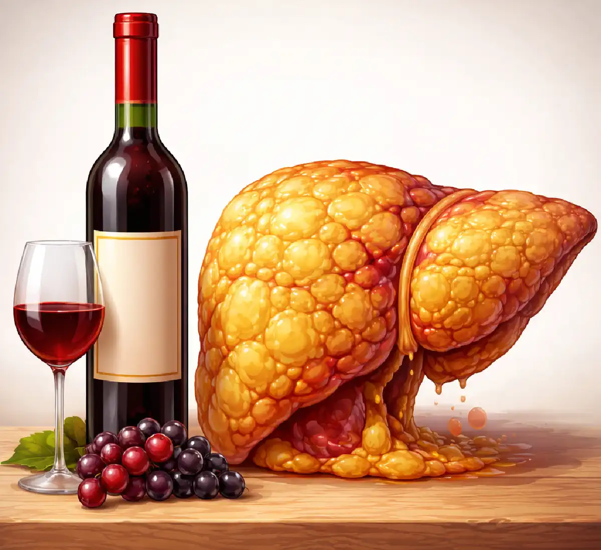

+38(068) 79 72 782
+38(068) 79 72 782Алкогольный цирроз — это не только желтая кожа
Тихое разрушение, которое начинается задолго до симптомов


Бесплатная консультация, работаем круглосуточно 24/7
Тихое разрушение, которое начинается задолго до симптомов

Алкогольный цирроз печени — это тяжёлое хроническое заболевание, которое развивается постепенно и часто остаётся незамеченным на протяжении многих лет. Многие люди ошибочно считают, что главный признак болезни — это желтушность кожи, однако на практике патологические изменения в печени начинаются задолго до появления очевидных симптомов. Под воздействием алкоголя клетки печени постепенно разрушаются, замещаются соединительной тканью, нарушается структура органа и его функции. Без своевременного лечения это приводит к тяжёлым осложнениям и угрозе для жизни.
На ранних этапах организм активно пытается компенсировать повреждения. Печень продолжает выполнять свои основные функции — участвовать в обмене веществ, обезвреживать токсины, синтезировать белки и ферменты. Однако эти процессы происходят уже с перегрузкой, и со временем компенсаторные возможности истощаются. Именно поэтому заболевание может длительное время протекать скрыто, без выраженных клинических проявлений. Регулярное употребление алкоголя запускает цепочку патологических изменений. Вначале развивается жировая инфильтрация печени, затем возникает воспаление — алкогольный гепатит, а при дальнейшем воздействии этанола формируется фиброз и цирроз. На этом этапе нормальная ткань печени постепенно замещается плотной соединительной тканью, которая не способна выполнять жизненно важные функции органа.
Особую опасность представляет тот факт, что человек долгое время не ощущает серьёзных нарушений. Лёгкая слабость, снижение работоспособности, периодический дискомфорт в правом подреберье или нарушения сна редко воспринимаются как симптомы серьёзного заболевания. В результате обращение к врачу откладывается, а патологический процесс продолжает прогрессировать. По мере разрушения печени нарушается детоксикационная функция организма. В крови начинают накапливаться токсические вещества, которые оказывают негативное влияние на нервную систему, сердечно-сосудистую систему и внутренние органы. Это может проявляться ухудшением памяти, снижением концентрации внимания, раздражительностью, тревожностью и общей слабостью. Кроме того, страдают обменные процессы. Печень играет ключевую роль в переработке белков, жиров и углеводов, поэтому при её поражении нарушается питание тканей и органов. У пациента может наблюдаться снижение массы тела, дефицит витаминов и микроэлементов, ухудшение состояния кожи, волос и общего самочувствия.
На более поздних стадиях формируются тяжёлые осложнения. Повышается давление в системе воротной вены (портальная гипертензия), может развиваться асцит — скопление жидкости в брюшной полости, возникают внутренние кровотечения, нарушается работа мозга (печёночная энцефалопатия). Эти состояния требуют срочного медицинского вмешательства и могут представлять угрозу для жизни пациента.
Печень обладает высокой способностью к регенерации и долгое время компенсирует повреждения. Даже при регулярном употреблении алкоголя орган продолжает выполнять свои функции, несмотря на постепенное разрушение клеток. Именно поэтому на ранних этапах заболевание протекает практически бессимптомно. Человек может чувствовать себя относительно нормально и не подозревать о серьёзных изменениях в организме. Симптомы появляются уже тогда, когда значительная часть печени повреждена.
На фоне постоянной алкогольной нагрузки в печени постепенно накапливаются патологические изменения. Сначала страдают отдельные клетки — гепатоциты, затем нарушается их восстановление, замедляются обменные процессы и ухудшается кровоснабжение тканей. Однако благодаря компенсаторным механизмам организм долгое время «маскирует» эти нарушения, что создаёт ложное ощущение благополучия. На ранних стадиях человек может отмечать лишь неспецифические симптомы: лёгкую усталость, снижение работоспособности, периодическую тяжесть в правом подреберье или дискомфорт после еды. Такие проявления редко воспринимаются как сигнал серьёзного заболевания и чаще списываются на стресс, переутомление или погрешности в питании.
Со временем компенсаторные возможности печени истощаются. Количество здоровых клеток уменьшается, а их место занимает соединительная ткань, которая не выполняет функций печени. Нарушается детоксикация организма, ухудшается переработка питательных веществ и синтез жизненно важных белков. Это приводит к постепенному ухудшению общего состояния и появлению более выраженных симптомов. Особую опасность представляет тот факт, что переход от скрытых стадий к более тяжёлым может происходить незаметно для пациента. В этот период заболевание уже активно прогрессирует, но человек всё ещё не связывает ухудшение самочувствия с поражением печени.
На этом этапе изменения происходят на клеточном уровне. Формируется жировая дистрофия печени, нарушаются обменные процессы, однако клинические проявления минимальны. Иногда может отмечаться лёгкая утомляемость, снижение энергии, дискомфорт в правом подреберье. Эти признаки редко связывают с заболеванием печени, что и делает стадию особенно опасной.
На фоне накопления жировых включений в клетках печени постепенно ухудшается их функция. Гепатоциты теряют способность полноценно участвовать в обмене веществ, замедляется выведение токсинов и продуктов распада алкоголя. Несмотря на это, организм продолжает компенсировать нарушения, поэтому выраженных симптомов может не быть. В этот период могут появляться неспецифические жалобы: тяжесть после приёма жирной пищи, периодическая тошнота, незначительное вздутие живота, снижение аппетита. Иногда отмечается раздражительность, ухудшение сна или снижение концентрации внимания, что связано с начальным влиянием токсинов на нервную систему.
Опасность данной стадии заключается в её «тихом» течении. Человек продолжает вести привычный образ жизни и зачастую не ограничивает употребление алкоголя, не подозревая о происходящих изменениях. В это время патологический процесс постепенно прогрессирует, создавая основу для дальнейшего развития воспаления и фиброза печени. Именно на этом этапе вмешательство наиболее эффективно. При полном отказе от алкоголя и своевременной медицинской поддержке изменения могут быть частично обратимыми, а функции печени — восстановлены. Однако при продолжении употребления алкоголя заболевание переходит на следующую стадию, где повреждения становятся более выраженными и менее обратимыми.
По мере прогрессирования заболевания появляются более заметные симптомы: хроническая усталость, снижение работоспособности, тяжесть после еды, нарушения сна. Многие пациенты списывают такие проявления на стресс, переутомление или неправильное питание, не обращаясь за медицинской помощью.
К этому периоду печень уже не справляется с нагрузкой так эффективно, как раньше. Нарушаются процессы детоксикации, в организме начинают накапливаться продукты обмена и токсические вещества, что постепенно отражается на общем самочувствии. Усталость становится более выраженной и не проходит даже после отдыха, появляется ощущение постоянной слабости и «разбитости». Дополнительно могут возникать такие симптомы, как снижение аппетита, периодическая тошнота, неприятный привкус во рту, вздутие живота и нестабильный стул. После употребления жирной или тяжёлой пищи усиливается чувство тяжести в правом подреберье. Эти признаки указывают на нарушение пищеварительной функции печени.
Нередко на этом этапе появляются изменения со стороны нервной системы: повышенная раздражительность, тревожность, ухудшение концентрации внимания и памяти. Нарушения сна могут проявляться как трудности с засыпанием, поверхностный сон или частые пробуждения ночью. Опасность данной стадии заключается в том, что симптомы становятся более выраженными, но всё ещё остаются неспецифическими. Пациенты продолжают игнорировать сигналы организма, откладывая визит к врачу. В это время заболевание активно прогрессирует, и патологические изменения в печени становятся всё более выраженными.
На этом этапе начинают страдать обменные процессы. Возможны потеря аппетита, снижение массы тела, периодическая тошнота, нестабильный стул. Организм хуже усваивает питательные вещества, что отражается на общем состоянии: появляется слабость, снижение концентрации внимания и ухудшение самочувствия.
Печень играет ключевую роль в обмене белков, жиров и углеводов, поэтому её поражение неизбежно приводит к системным нарушениям. Замедляется синтез жизненно важных белков, ухудшается переработка жиров, могут возникать дефициты витаминов и микроэлементов. В результате организм начинает испытывать энергетический дефицит, что проявляется быстрой утомляемостью и снижением физической выносливости.
Нередко на этом этапе пациенты отмечают изменения внешнего вида: кожа становится более сухой, может появляться бледность, тусклость, ломкость волос и ногтей. Это связано с нарушением питания тканей и ухудшением обменных процессов. Дополнительно могут возникать ощущения тяжести и распирания в животе, особенно после еды, метеоризм, нестабильность пищеварения. В некоторых случаях появляется непереносимость жирной пищи, что ещё больше ограничивает рацион и усиливает дефицит питательных веществ.
Со стороны нервной системы также наблюдаются изменения: снижается работоспособность, ухудшается память, появляется рассеянность и эмоциональная нестабильность. Человек может чувствовать апатию, потерю интереса к привычной деятельности и постоянную усталость. Данная стадия свидетельствует о том, что патологический процесс уже затрагивает не только саму печень, но и весь организм. Без своевременного лечения и отказа от алкоголя нарушения будут прогрессировать, приводя к более серьёзным осложнениям и ухудшению качества жизни.
Появляются внешние признаки: сухость кожи, сосудистые «звёздочки», зуд, изменение цвета кожи. Нарушается пищеварение, усиливается тяжесть после еды, возможны вздутие, боли в животе. Масса тела может снижаться или, наоборот, увеличиваться за счёт задержки жидкости.
На этом этапе изменения становятся заметными не только для самого пациента, но и для окружающих. Кожа может приобретать землистый или сероватый оттенок, появляется склонность к шелушению и раздражению. Сосудистые «звёздочки» чаще локализуются на лице, груди и плечах и свидетельствуют о нарушении сосудистого тонуса и гормонального баланса. Зуд кожи связан с накоплением желчных кислот и токсических веществ, которые начинают раздражать нервные окончания.
Со стороны пищеварительной системы нарушения становятся более выраженными. Печень уже не справляется с полноценной выработкой и участием в обмене желчи, что приводит к ухудшению переваривания пищи, особенно жиров. Это сопровождается чувством переполнения желудка, тяжестью даже после небольшого приёма пищи, а также эпизодами тошноты и дискомфорта. Вздутие живота и боли могут быть связаны как с нарушением пищеварения, так и с началом формирования портальной гипертензии — состояния, при котором повышается давление в системе воротной вены. Это приводит к застою крови и жидкости в органах брюшной полости.
Изменения массы тела также носят неоднозначный характер. С одной стороны, человек может терять вес из-за нарушения обмена веществ и снижения аппетита. С другой — может наблюдаться увеличение объёма живота за счёт задержки жидкости, что является тревожным признаком прогрессирования заболевания. На этой стадии организм уже явно сигнализирует о серьёзных нарушениях. Игнорировать такие симптомы становится опасно, поскольку они указывают на переход заболевания в более тяжёлую форму с риском развития осложнений.
На этой стадии возникают первые серьёзные осложнения: увеличение печени, боли, выраженная слабость, отёки. Несмотря на это, многие пациенты продолжают откладывать обращение к врачу, что значительно ухудшает прогноз.
Печень становится увеличенной и болезненной при пальпации, что связано с воспалительными процессами и нарушением её структуры. Болевые ощущения в правом подреберье могут усиливаться после еды или физической нагрузки. Одновременно усиливается общая слабость, появляется выраженная утомляемость даже при минимальной активности. Отёки чаще всего возникают на нижних конечностях и связаны с нарушением белкового обмена и задержкой жидкости в организме. В более тяжёлых случаях может начинаться накопление жидкости в брюшной полости — асцит, что приводит к увеличению объёма живота и дополнительному дискомфорту.
На этом этапе уже заметно страдает работа сердечно-сосудистой системы: возможны скачки артериального давления, учащённое сердцебиение, ощущение нехватки воздуха. Нарушается и система свёртывания крови, что может проявляться склонностью к кровоточивости, появлением синяков даже при незначительных травмах. Также усиливаются проявления интоксикации: ухудшается концентрация внимания, появляется сонливость днём, могут возникать перепады настроения и раздражительность. Это связано с накоплением токсинов, которые печень уже не способна эффективно обезвреживать. Опасность данной стадии заключается в том, что осложнения уже начинают активно развиваться, однако при отсутствии лечения процесс продолжает прогрессировать. Своевременное обращение к врачу на этом этапе может замедлить развитие заболевания и предотвратить переход в критическую стадию с угрозой для жизни.
Функции печени значительно нарушены. В организме накапливаются токсические вещества, что приводит к выраженной интоксикации. Появляются нарушения памяти, спутанность сознания, выраженная слабость, проблемы с координацией. Состояние требует срочной медицинской помощи.
На этом этапе развивается тяжёлое поражение центральной нервной системы — так называемая печёночная энцефалопатия. Токсины, которые в норме обезвреживаются печенью, начинают воздействовать на головной мозг, нарушая передачу нервных импульсов. Это проявляется замедлением мышления, трудностями с концентрацией внимания, дезориентацией во времени и пространстве. Пациент может становиться заторможенным или, наоборот, чрезмерно возбуждённым, появляются перепады настроения, тревожность, нарушения сна. В более тяжёлых случаях возможны галлюцинации, выраженная спутанность сознания и потеря контакта с окружающей реальностью.
Физическое состояние также резко ухудшается. Усиливается слабость, появляется дрожание рук (тремор), нарушается координация движений, человеку становится трудно выполнять даже простые повседневные действия. Может наблюдаться выраженная потеря аппетита, истощение, усиление отёков и увеличение объёма живота за счёт асцита. Дополнительно страдает работа сердечно-сосудистой и дыхательной систем. Возможны колебания артериального давления, учащённое сердцебиение, ощущение нехватки воздуха. Организм находится в состоянии выраженного истощения и перегрузки токсинами. Это критическая стадия, при которой промедление с медицинской помощью может привести к тяжёлым осложнениям, включая кому. Необходима срочная госпитализация, интенсивная терапия и постоянное наблюдение специалистов.
На финальной стадии печень практически утрачивает свои функции. Развиваются тяжёлые осложнения: асцит, внутренние кровотечения, печёночная недостаточность. Это состояние представляет прямую угрозу для жизни и требует интенсивного лечения.
На данном этапе орган уже не способен полноценно выполнять свои основные функции — очищение крови от токсинов, участие в обмене веществ и синтез жизненно важных белков. В организме накапливаются продукты распада, усиливается интоксикация, нарушается работа других органов и систем. Особенно страдает нервная система, что может приводить к развитию печёночной энцефалопатии — состоянию, сопровождающемуся спутанностью сознания, нарушением мышления и поведения. Асцит проявляется скоплением жидкости в брюшной полости, что приводит к увеличению живота, чувству тяжести и затруднению дыхания. Внутренние кровотечения возникают из-за повышения давления в системе воротной вены и истончения сосудов, что делает их крайне опасными и требует срочного медицинского вмешательства.
На этой стадии пациенты могут сталкиваться с выраженной слабостью, резким снижением массы тела, нарушением аппетита и общей истощённостью организма. Любые нагрузки становятся тяжело переносимыми, а общее состояние быстро ухудшается. Лечение на данном этапе требует комплексного медицинского подхода и зачастую проводится в условиях стационара. Основные задачи терапии — стабилизация состояния пациента, предотвращение осложнений и поддержка жизненно важных функций организма. В некоторых случаях единственным радикальным методом лечения может рассматриваться трансплантация печени.
Желтуха — это поздний симптом цирроза. Она возникает тогда, когда печень уже не справляется с переработкой билирубина. До этого момента заболевание может прогрессировать годами без выраженных внешних признаков, что делает раннюю диагностику особенно важной.
Повышение уровня билирубина в крови приводит к характерному пожелтению кожи, слизистых оболочек и склер глаз. Однако к моменту появления желтухи патологические изменения в печени уже носят выраженный характер, а функциональные возможности органа значительно снижены. Это означает, что заболевание перешло в более тяжёлую стадию и требует срочного медицинского вмешательства.
Отсутствие желтухи не означает отсутствие заболевания. На протяжении длительного времени цирроз может развиваться скрыто, сопровождаясь лишь неспецифическими симптомами — усталостью, слабостью, снижением аппетита или нарушением сна. Эти признаки часто игнорируются или списываются на стресс и переутомление. Дополнительно могут наблюдаться такие малозаметные изменения, как периодический дискомфорт в правом подреберье, незначительные нарушения пищеварения, вздутие живота или нестабильный стул. Со временем эти симптомы становятся более выраженными, однако пациенты не всегда связывают их с заболеванием печени. Именно поэтому регулярные медицинские обследования имеют большое значение, особенно для людей, находящихся в группе риска. Лабораторные анализы крови, ультразвуковое исследование печени и консультация врача позволяют выявить патологические изменения на ранних стадиях, когда лечение наиболее эффективно.
Наиболее часто игнорируются:
Эти симптомы нередко воспринимаются как незначительные и временные, поэтому многие люди не придают им должного значения. Усталость списывается на переутомление, снижение аппетита — на стресс, а нарушения сна — на эмоциональное напряжение. Однако именно такие «незаметные» признаки могут быть первыми сигналами серьёзных нарушений в работе печени. Со временем данные симптомы могут усиливаться и становиться более устойчивыми. Человек начинает быстрее уставать даже при незначительных нагрузках, ухудшается концентрация внимания, снижается работоспособность. Появляется ощущение постоянной слабости и отсутствия энергии, которое не проходит даже после отдыха.
Снижение аппетита и периодическая тошнота могут приводить к постепенной потере массы тела и дефициту питательных веществ. Это дополнительно ослабляет организм и ухудшает общее состояние. Нарушения сна и повышенная раздражительность указывают на вовлечение нервной системы, что также характерно для хронических заболеваний печени. Тяжесть или дискомфорт в правом подреберье часто остаются без внимания, особенно если они выражены слабо. Тем не менее этот симптом может свидетельствовать об увеличении печени или нарушении её функции. Игнорирование этих признаков приводит к тому, что заболевание продолжает прогрессировать. Без своевременного обращения к врачу патологические изменения в печени накапливаются, что со временем приводит к развитию более тяжёлых стадий цирроза и осложнений.
Кто находится в группе риска по развитию цирроза печени. К группе риска относятся:
Чем дольше и чаще употребляется алкоголь, тем выше риск развития цирроза. Дополнительно следует учитывать, что риск значительно возрастает при сочетании нескольких факторов. Например, употребление алкоголя на фоне вирусного гепатита или ожирения ускоряет разрушение печени и приводит к более быстрому развитию цирроза. В группу повышенного риска также входят люди с избыточной массой тела, сахарным диабетом и нарушениями обмена веществ. Такие состояния способствуют развитию жировой болезни печени, которая при отсутствии лечения может прогрессировать до цирроза.
Отдельное внимание следует уделить пациентам, которые длительно принимают лекарственные препараты с гепатотоксическим действием. Неконтролируемый приём медикаментов может оказывать дополнительную нагрузку на печень и усиливать её повреждение. Генетическая предрасположенность и особенности обмена веществ также могут влиять на скорость развития заболевания. У некоторых людей печень более чувствительна к воздействию токсинов, включая алкоголь, что повышает риск повреждения даже при относительно умеренном употреблении.
Цирроз не развивается внезапно. Это длительный процесс, который формируется на протяжении многих лет под воздействием неблагоприятных факторов. Поэтому люди из группы риска должны особенно внимательно относиться к своему здоровью, проходить регулярные обследования и при необходимости своевременно обращаться за медицинской помощью. Профилактика играет ключевую роль в предотвращении заболевания. Ограничение или полный отказ от алкоголя, контроль хронических заболеваний, правильное питание и наблюдение у врача позволяют значительно снизить риск развития цирроза печени.
Обратиться за медицинской помощью необходимо при появлении:
Своевременная диагностика позволяет предотвратить развитие тяжёлых осложнений. Перечисленные симптомы могут свидетельствовать о серьёзном поражении печени и прогрессировании заболевания. Их появление часто указывает на то, что компенсаторные возможности организма уже истощены, и состояние требует профессиональной медицинской оценки. Особую настороженность должны вызывать нарушения сознания, спутанность мыслей, заторможенность или изменения поведения. Такие проявления могут быть признаками печёночной энцефалопатии — опасного состояния, требующего срочной помощи.
Желтушность кожи и глаз говорит о нарушении обмена билирубина и выраженных изменениях в работе печени. Отёки и резкое снижение веса могут указывать на нарушения обмена белков и жидкости, что также характерно для поздних стадий заболевания. Боли в правом подреберье, особенно если они становятся постоянными или усиливаются, могут свидетельствовать об увеличении печени, воспалении или развитии осложнений. Чем раньше пациент обращается за медицинской помощью, тем выше вероятность стабилизировать состояние, замедлить прогрессирование заболевания и предотвратить тяжёлые последствия.
На ранних этапах процесс может быть частично обратим. Полный отказ от алкоголя, медикаментозная поддержка и изменение образа жизни позволяют значительно замедлить прогрессирование заболевания. Чем раньше начато лечение, тем выше шанс сохранить функции печени и предотвратить развитие цирроза.
На этом этапе клетки печени ещё способны восстанавливаться, а структурные изменения не носят критического характера. При устранении повреждающего фактора — в первую очередь алкоголя — снижается нагрузка на орган, запускаются процессы регенерации и улучшается общее состояние организма. Медикаментозная терапия направлена на поддержку функций печени, нормализацию обменных процессов и снижение воспаления. Дополнительно могут назначаться витамины, гепатопротекторы и препараты для коррекции сопутствующих нарушений.
Не менее важную роль играет образ жизни. Рациональное питание, отказ от токсических веществ, нормализация режима сна и снижение уровня стресса помогают организму быстрее восстановиться. Также рекомендуется регулярное медицинское наблюдение, которое позволяет контролировать состояние печени и своевременно корректировать лечение. При комплексном подходе возможно не только замедлить развитие заболевания, но и значительно улучшить качество жизни пациента. Именно поэтому раннее выявление проблемы и своевременное начало терапии имеют ключевое значение в профилактике цирроза и его осложнений.
Смертность при алкогольном циррозе печени связана не только с самим поражением органа, но и с тяжёлыми осложнениями, которые развиваются по мере прогрессирования заболевания. Цирроз — это конечная стадия хронического повреждения печени, при которой её структура необратимо изменяется, а функции постепенно угасают.
Одной из наиболее частых причин смерти является печёночная недостаточность. В этом состоянии печень перестаёт выполнять свои жизненно важные функции — очищение крови от токсинов, участие в обмене веществ и синтез белков. В организме накапливаются токсические вещества, что приводит к тяжёлой интоксикации и нарушению работы всех систем. Не менее опасным осложнением являются внутренние кровотечения, особенно из варикозно расширенных вен пищевода. Из-за повышения давления в системе воротной вены сосуды становятся хрупкими и могут разрываться. Такие кровотечения развиваются внезапно, протекают тяжело и без срочной медицинской помощи могут закончиться летально.
Частой причиной летального исхода становится печёночная энцефалопатия. Это состояние развивается на фоне накопления токсинов, которые поражают головной мозг. У пациента появляются спутанность сознания, нарушения мышления, дезориентация, а в тяжёлых случаях — кома. Асцит и его осложнения также представляют серьёзную угрозу. Скопление жидкости в брюшной полости может приводить к инфицированию (спонтанный бактериальный перитонит), дыхательной недостаточности и значительному ухудшению общего состояния пациента.
Кроме того, у пациентов с циррозом часто развиваются инфекции, поскольку иммунная система ослаблена. Даже обычные воспалительные процессы могут протекать тяжело и приводить к серьёзным осложнениям. Отдельно стоит отметить влияние продолжающегося употребления алкоголя. Даже на фоне уже сформированного цирроза алкоголь ускоряет разрушение печени, усугубляет интоксикацию и значительно повышает риск смертельного исхода. Смерть при алкогольном циррозе чаще всего наступает не внезапно, а как результат цепочки осложнений, связанных с прогрессирующим разрушением печени и нарушением работы всего организма. Именно поэтому раннее обращение за медицинской помощью, отказ от алкоголя и комплексное лечение играют ключевую роль в сохранении жизни пациента.
Наркологическая клиника UmbrellaPlus предлагает комплексный подход к лечению алкогольной зависимости и заболеваний печени. Доктора клиники проводят детоксикацию, медикаментозную терапию, восстановление функций печени и психологическую поддержку пациента. Клиника работает в таких городах Украины, как (Киев | Харьков | Одесса | Днепр | Львов | Запорожье | Черкассы) обеспечивая доступ к квалифицированной помощи в разных регионах.
Комплексное лечение направлено не только на устранение последствий употребления алкоголя, но и на предотвращение дальнейшего разрушения печени. Индивидуальный подход позволяет повысить эффективность терапии и снизить риск осложнений. Своевременное обращение за медицинской помощью — это ключевой шаг к сохранению здоровья и предотвращению тяжёлых последствий алкогольной зависимости.
Телефон для консультации и записи: +38(050-021-69-57)

Да, мы строго соблюдаем полную конфиденциальность на всех этапах лечения. Информация о пациенте, диагнозе и прохождении терапии не передаётся третьим лицам. Обращение к нам не влечёт постановку на учёт. Вы можете быть уверены в безопасности и анонимности.
Программа лечения разрабатывается индивидуально после консультации со специалистом. Учитываются вид зависимости, её длительность, физическое и психологическое состояние пациента. Такой подход позволяет повысить эффективность терапии и снизить риск срыва. Мы не используем шаблонные решения.
Да, мы сопровождаем пациентов и после основного курса лечения. Проводятся консультации, рекомендации по адаптации и профилактике рецидивов. При необходимости возможна дальнейшая психологическая поддержка. Это помогает сохранить результат и вернуться к полноценной жизни.
Номер телефона:
+380 (68) 797 27 82
+380 (50) 021 69 57
Адрес наркологического центра вашего города уточняйте по
телефону
Работаем в: Киеве, Одессе, Львове, Харькове, Днепре,
Запорожье, Черкассах, Чугуеве, Черноморске, Каменском
Telegram: t.me/umbrellaplus
График работы: Круглосуточно